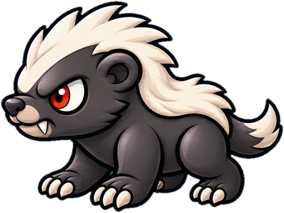

 Fire
FireTap a stage to read its story.
Melvit is a compact little beast with a bold black-and-cream face pattern and tiny beady eyes that gleam red in firelight. Its stubby body is built like a rounded wedge, short legs splayed wide for digging. It snuffles around the lava crater's cooled edges, nosing through volcanic rubble. Despite its small size, Melvit shows no fear - it will stare down creatures three times its height without blinking. The guardians say Melvit was the first creature to approach the crater willingly, and the volcano didn't dare argue.
Field note: Melvit has never been observed retreating from anything - researchers have placed obstacles in its path and watched it push straight through every one.
Lava Crater. Melvit and its family are found in the Lava Crater. See everyone who lives there.
Share a Bond Food that matches its types to become friends. Melvit loves:
A Bond Food is not a trick. It joins your spirit with the Kimuro's spirit, and only when it chooses you.
Print the Kimuro adventure packs: mazes, cards, a board game and Bond Mark medals.
See the printable packs